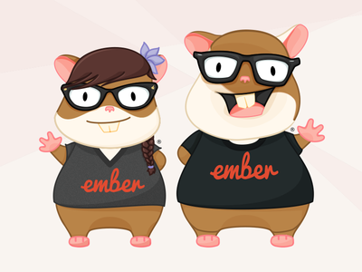
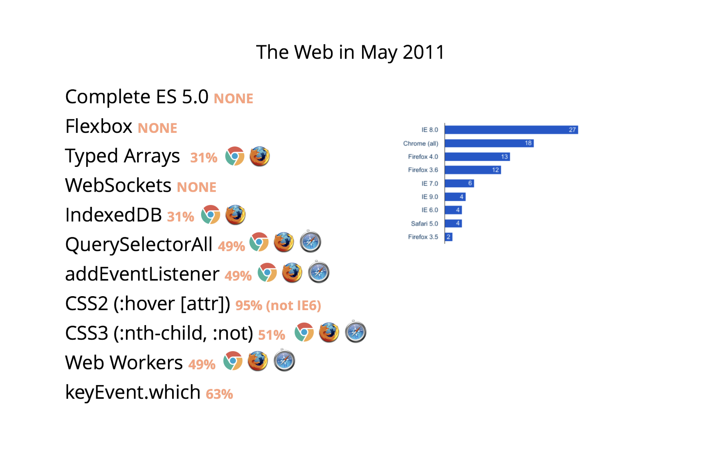
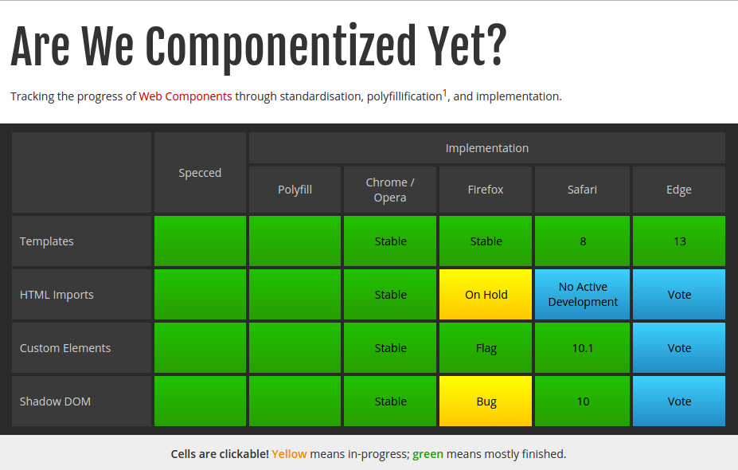
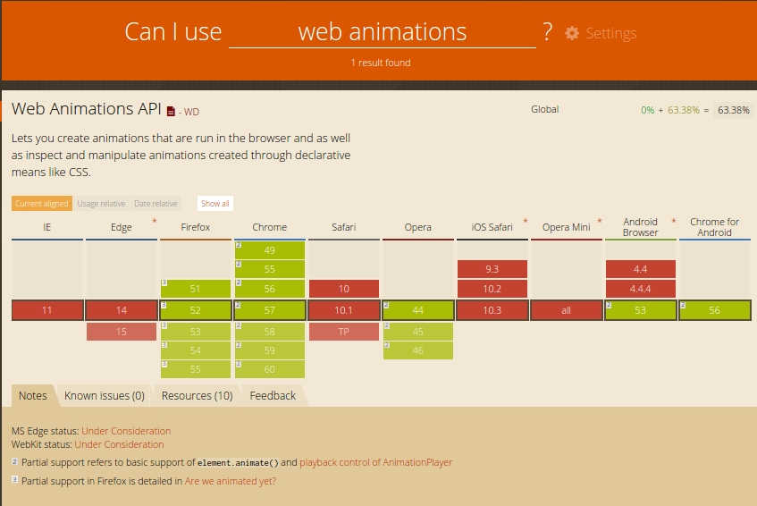

Hi everyone!
Jessica Jordan
@jjordan_dev
Front-End Developer @Leadfeeder
Ember.js Berlin Co-Organizer w/ Clemens Mueller & Joschka Kintscher
Opentechschool Berlin Mentor + Co-Organizer
The Web not too long ago
 Source: EmberConf 2017:State of the Union. By Tom Dale, Yehuda Katz and Godfrey Chan

Browsers evolve to become robust application platforms
JavaScript MV* framework everywhere


...and components, too!
Example for JS Framework Components: Ember's Component API
// app/components/my-component.js
export default Ember.Component({
tagName: 'article',
classNames: ['my-component'],
name: null,
title: Ember.computed('name', function() {
return `${this.get('name')}'s Component;
})
});
// app/templates/components/my-component.hbs
{{title}}
Example for JS Framework Components: Ember's Component API
// app/templates/another-template-in-the-app.hbs
{{my-component name="Racoon Hero"}}
// ...will be rendered as follows in the DOM
Racoon Hero's Component
What are webcomponents?
UI components created for easy reusability and extensibility
based on open (evolving) web standards
- Custom Elements
- HTML Templates
- Shadow DOM
- HTML Imports
Are we componentized yet?
 Are we componentized yet? Jon Rimmer, May 30th 2017Easy polyfilling with component libraries


Polyfills + easy-to-use component libraries out-of-the box
Learning yet another framework?
The Ember community presents its own solution
What is Glimmer.js?
Create re-usable UI widgets based on convention over configuration
Using Ember's improved rendering engine: Glimmer 2
Using Ember's battle-tested tooling
Creating our first web component
Glimmer.js Tooling and File Structure

Project serving, building, testing and generators included
// getting ready with yarn!
yarn global add ember-cli@2.14.0-beta.1
// or staying old-school with npm ;-)
npm install -g ember-cli@2.14.0-beta.1
Building a webcomponent overview
// creating a new Glimmer app for our web component
ember new comic-panel -b @glimmer/blueprint --web-component
// creating a new Glimmer project
comic-panel/
- config/
- dist/
- public/
- src/
-- index.ts
-- main.ts
-- ui/
--- style/
--- components/comic-panel/
---- component.ts
---- template.ts
Leveraging Type declarations with TypeScript

Allow type annotations for more descriptive and scalable code
Tracking Property Changes
import Component, { tracked } from "@glimmer/component";
export default class ComicPanel extends Component {
@tracked isAnimationRunning: boolean = false;
@tracked('isAnimationRunning')
get isPlaying() {
return this.isAnimationRunning;
}
}
Handling State
// src/ui/components/comic-panel/component.ts
import Component, { tracked } from "@glimmer/component";
export default class ComicPanel extends Component {
// ...
togglePlayState() {
this.isAnimationRunning = !this.isAnimationRunning;
if (this.isAnimationRunning) {
this.animation.play();
}
else {
this.animation.pause();
}
}
}
Web Animations API
Powerful Web API for creating animation and controlling their playbackThe KeyframeEffect interface
var rotating = [
{ transform: `rotate(0) translate3D(-50%, -50%, 0)`,
color: '#000'
},
{ color: '#431236',
offset: 0.333
},
{ transform: 'rotate(360deg) translate3D(-50%, -50%, 0)',
color: '#000'
}
];
Web Animations API
Powerful Web API for creating animation and controlling their playbackThe Timeline interface
document.timeline.getAnimations();
// returns all running animations set on the document
document.getElementById('my-element').play(keyframeEffects, options);
// creates an Animation object instance with playback controls
Yay, Animating with WAAPI! ...but the browser support?
That's a "No", right?

Web Animations JS Polyfill
Build WAAPI powered animations today!
Defining the animation keyframes
export default class ComicPanel extends Component({
frameTotal: number = 6;
animations = [{
layerId: 'comic-panel-layer-1',
image: 'img/racoonhero.png',
frameTotal: this.frameTotal,
keyframeSet: [
{ backgroundPosition: '0 0' },
{ backgroundPosition: '0 100%' }
],
keyframeOptions: {
duration: 400,
fill: 'none',
direction: 'normal',
easing: `steps(${this.frameTotal - 1})`,
iterations: 'Infinity'
}
}];
})
Creating the component's HTML markup
// src/ui/components/comic-panel/template.hbs
Leveraging Glimmer's Lifecycle Hooks
export default class ComicPanel extends Component({
// ...
didInsertElement() {
const animation = this.animations[0];
const keyFrames = animation.keyframeSet;
const layerElement = document.getElementById(animation.layerId);
const timings = animation.keyframeOptions;
const keyframeEffect = new KeyframeEffect(layerElement, keyFrames, timings);
const animationInstance = document.timeline.play(keyframeEffect);
animationInstance.pause();
this.animation = animationInstance;
}
})
Re-using the component as a custom element
// ...
// ...
Create modern web components today
and use them inside of Glimmer apps or outside in framework-agnostic applications
Lots of work in progress
- Top-level component arguments
- Importing CommonJS modules
- Pre-packaged test suite similar to Ember
...but potential to bring us closer to re-usable, framework-agnostic webcomponents